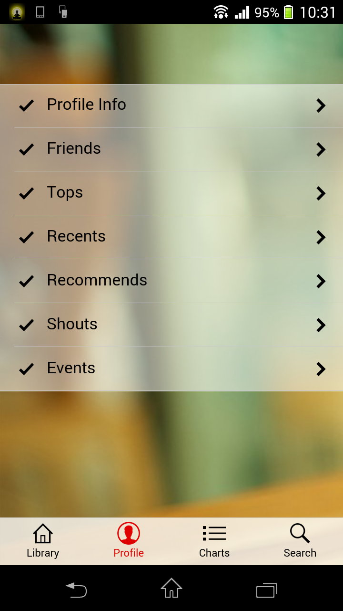
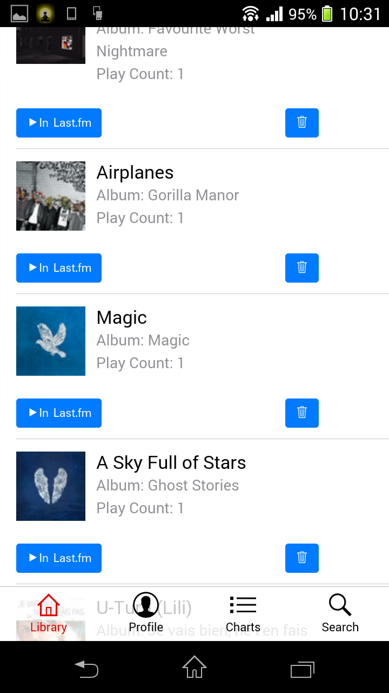
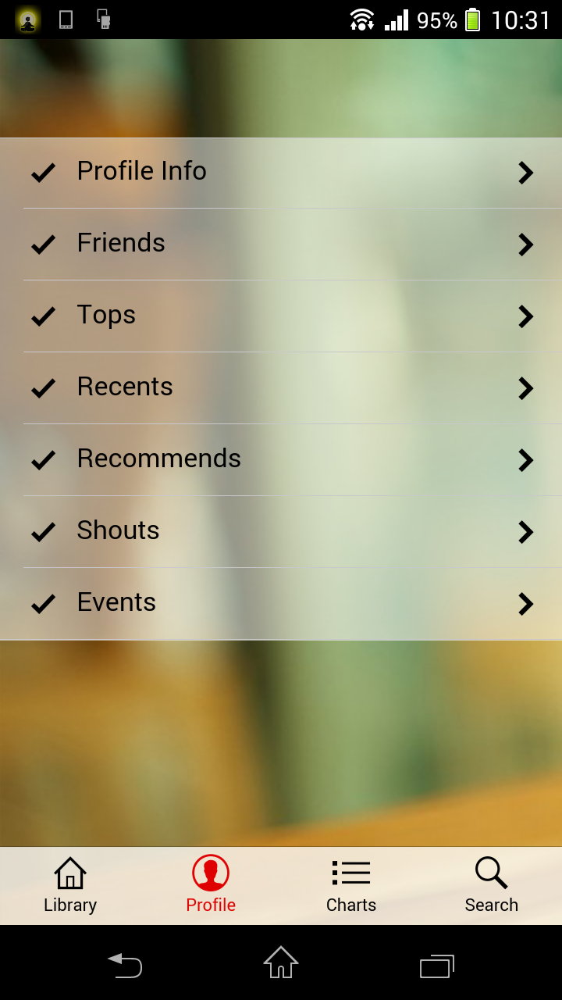
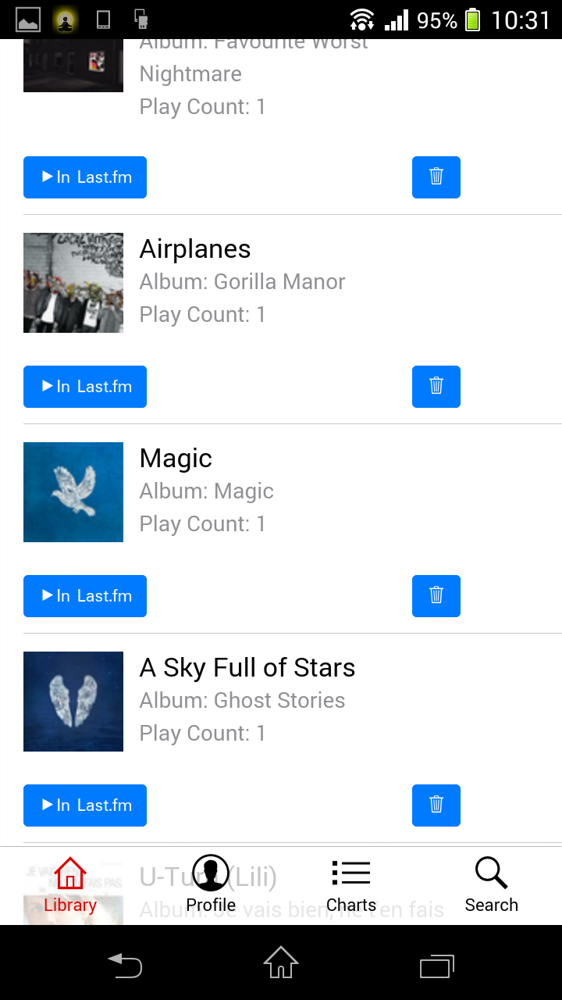

Please feel free to use my app!
PROJECT DETAIL
This is a social media application for using your last.fm account with android operation system. Consistent look and User Experience (UX) is achieved using hybrid technology. While for better performance custom Java Libraries was created and used as API for the hybrid application.
For Design and Development of this program the following technologies are used:
Java (Native Android Programming Language)
Phonegap (Javascript, HTML, CSS)
SQLlite
Please click on the link to download the application:
Download Last Sound Version 1.0 Here
 


